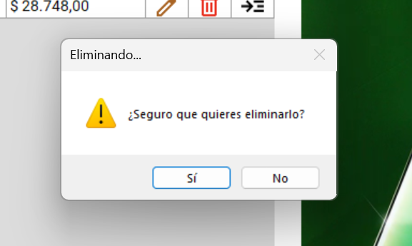

Bienvenido a la Aplicación de Gestión de Artículos
Esta aplicación fue diseñada para que gestionar tus artículos, marcas y categorías sea rápido y sencillo. Podrás dar de alta, modificar o eliminar artículos, organizar marcas y categorías, y visualizar imágenes de tus productos de manera fácil. Además, cuenta con filtros inteligentes que te permitirán encontrar lo que buscas en segundos.
Contenido
1. Introducción y Menú
Al abrir la aplicación, te recibe una ventana de bienvenida donde podrás ingresar tu nombre para personalizar la experiencia. Luego, podrás navegar mediante un menú tipo hamburguesa, elegante y fácil de usar, que te permitirá acceder rápidamente a las secciones principales:

Menú

2. Gestión de Artículos
La sección de Artículos es el corazón de la aplicación. Aquí podrás ver todos tus productos en un panel central, donde se muestra de forma clara y ordenada cada artículo con su nombre, categoría, marca y precio.
Opciones por artículo
Para cada artículo, tendrás opciones intuitivas:
- Eliminar artículos.


La aplicación permite previsualizar las imágenes de cada artículo y recorrerlas fácilmente, ya sea que estén cargadas desde Internet o desde archivos locales.
Búsqueda de Artículos
El sistema cuenta con un buscador rápido y un filtro avanzado.
- Filtro rápido: filtra por nombre de artículo.
-
Filtro avanzado: se activa presionando el check de Filtrar; permite filtrar por campo y criterio.
Limpiar entradas del filtro avanzado:


Agregar Artículo
Para agregar un artículo, haga clic en el ícono correspondiente:
Al agregar un artículo, la aplicación gestiona automáticamente el formato de moneda argentina y valida los campos obligatorios, haciendo la carga de productos rápida y sin errores.

En la barra superior derecha tiene la posibilidad de agregar una imagen por URL:
- Quitar imagen:


Eliminar Artículo
Debe tener en cuenta que la eliminación de un artículo es definitiva y no hay forma de recuperar el registro. Utilícelo con precaución; para su seguridad, el sistema le pedirá confirmar si realmente desea eliminar un registro.
Footer
En la parte inferior de la sección, encontrarás un mensaje de bienvenida personalizado y la fecha y hora actual del sistema para que siempre sepas en qué momento estás trabajando.